Este material foi desenvolvido pelo Prof. Daniel Pagotto para a disciplina de Análise e Comunicação de Dados.
1. Preparando o ambiente
Antes de tudo, vamos carregar os pacotes que vamos usar para a aula de hoje. Lembra que na aula passada instalamos alguns deles? Para aqueles que ainda não instalou, rode install.packages("nome_do_pacote") no Console.
Caso já esteja com os pacotes instalados, basta carregá-los usando o library(nome_do_pacote).
library(ggplot2) # visualização de dados library(dplyr) # manipulação de dados (já vimos na aula 1!) library(gapminder) # base de dados library(forcats) # função para lidar com dados qualitativos library(vroom) # leitura rápida de dadoslibrary(janitor) # limpeza de dados# Carregando os dados (igual à aula passada!) dados = gapminder::gapminder glimpse(dados)
Antes de iniciarmos a aula de visualização de dados, preciso mostrar uma função muito importante do pacote dplyr que vocês vão usar com frequência nos projetos finais.
Antes de iniciar, vamos ver os joins
Muitos de vocês receberam dados que possuem estrutura semelhante a essa aqui.
Mas a pergunta que não quer calar: o que é CODMUNRES? No Brasil, o IBGE padronizou que cada município tem um código de identificação (é como se fosse o “CPF” do município).
Tá, entendi. Mas se eu usar este código, meu usuário não vai entender o que significa. Tem como identificar esse município de alguma forma ao invés de usar códigos? Tem sim! Vamos ver!
Temos a seguinte base que lista todos os municípios brasileiros. Note que nesta base também temos uma variável que identificar o código do município (cod_municipio)!
Rows: 5570 Columns: 6
── Column specification ────────────────────────────────────────────────────────
Delimiter: ","
chr (5): uf_sigla, uf, uf_pad, municipio, municipio_pad
dbl (1): cod_municipio
ℹ Use `spec()` to retrieve the full column specification for this data.
ℹ Specify the column types or set `show_col_types = FALSE` to quiet this message.
O que precisamos fazer? Unir as duas bases usando esta variável como chave de ligação. Veja como fica! O que estou fazendo?
juntando por meio do left_join() as bases nascimentos_ano e municipios usando as variáveis equivalentes como chave de ligação: CODMUNRES e cod_municipio.
nascimentos_ano |>left_join(municipios, by =c("CODMUNRES"="cod_municipio"))
# A tibble: 168 × 8
# Groups: ANO [24]
ANO CODMUNRES total uf_sigla uf uf_pad municipio municipio_pad
<dbl> <dbl> <int> <chr> <chr> <chr> <chr> <chr>
1 2000 520025 2301 GO Goiás GOIAS Águas Lindas de Go… AGUAS LINDAS…
2 2000 520549 770 GO Goiás GOIAS Cidade Ocidental CIDADE OCIDE…
3 2000 520620 720 GO Goiás GOIAS Cristalina CRISTALINA
4 2000 521250 3562 GO Goiás GOIAS Luziânia LUZIANIA
5 2000 521523 1906 GO Goiás GOIAS Novo Gama NOVO GAMA
6 2000 521975 1232 GO Goiás GOIAS Santo Antônio do D… SANTO ANTONI…
7 2000 522185 2218 GO Goiás GOIAS Valparaíso de Goiás VALPARAISO D…
8 2001 520025 2263 GO Goiás GOIAS Águas Lindas de Go… AGUAS LINDAS…
9 2001 520549 637 GO Goiás GOIAS Cidade Ocidental CIDADE OCIDE…
10 2001 520620 730 GO Goiás GOIAS Cristalina CRISTALINA
# ℹ 158 more rows
Existem outras formas de join, mas não vamos adentrar por hora.
As variáveis usadas para juntar devem ser iguais, inclusive em tipo. Veja que ambas são numéricas (dbl).
Só para concluir, vamos manter apenas algumas variáveis importantes:
# A tibble: 168 × 5
# Groups: ano [24]
ano codmunres uf_sigla municipio total
<dbl> <dbl> <chr> <chr> <int>
1 2000 520025 GO Águas Lindas de Goiás 2301
2 2000 520549 GO Cidade Ocidental 770
3 2000 520620 GO Cristalina 720
4 2000 521250 GO Luziânia 3562
5 2000 521523 GO Novo Gama 1906
6 2000 521975 GO Santo Antônio do Descoberto 1232
7 2000 522185 GO Valparaíso de Goiás 2218
8 2001 520025 GO Águas Lindas de Goiás 2263
9 2001 520549 GO Cidade Ocidental 637
10 2001 520620 GO Cristalina 730
# ℹ 158 more rows
2. A lógica do ggplot2 — A Gramática dos Gráficos
Na aula passada aprendemos a manipular dados com o dplyr: selecionar colunas, filtrar linhas, agrupar e resumir. Agora vamos dar um passo importante: transformar esses dados em gráficos.
Afinal, de nada adianta calcular a média de PIB per capita de cada continente se não conseguimos comunicar isso de forma clara. É aí que entra a visualização de dados.
A ferramenta que vamos usar é o pacote ggplot2.
É muito importante que leia atentamente o material e reproduza o código no seu computador.
Não copie e cole os trechos de código, DIGITE e rode os comandos. Isso é importante para o sucesso do seu aprendizado!
Outra dica, faça testes: rode o código com ou sem um parâmetro e veja como fica.
Antes de começar, precisamos entender que ggplot2 funciona por meio de camadas.
Você vai empilhando camadas no gráfico usando o operador +. Como se fosse uma receita — você vai adicionando ingredientes. Veja a seguir a lógica.
Não se preocupe que vamos daqui a pouco aprofundar.
ggplot(dados, aes(x = ano, y = pib)) +# camada basegeom_line() +# tipo de gráficolabs(title ="PIB ao longo do tempo") +# rótulostheme_minimal() # estilo
Agora vamos ver isso na prática!
2.1. Gráfico de Linha — Evolução do PIB per capita
Nosso primeiro gráfico vai mostrar como o PIB per capita do Brasil e do Chile evoluiu ao longo do tempo.
Primeiro, usando o dplyr (que você já conhece!), vamos filtrar apenas os dois países:
# Filtrando Brasil e Chile (relembrando o filter() da aula 1!) e guardando em um objeto chamado brasil_chile brasil_chile = dados |>filter(country %in%c("Brazil", "Chile"))
O operador %in% é muito útil! Lembra na primeira aula que aprendemos o operador OU (|)? O %in% é equivalente a usar vários OU. Nesse caso, ele filtra se o país for Brasil OU Chile.”
Agora vamos construir o gráfico. O comando abaixo faz o seguinte:
“R, entra na base brasil_chile. Vamos usar a função ggplot para pegar duas variáveis year (ano) e gdpPercap (PIB per capita) nos eixos x e y, respectivamente. Insira uma nova camada chamada geom_line()”. Veja o que ele faz.
brasil_chile |>ggplot(aes(x = year, y = gdpPercap)) +geom_line()
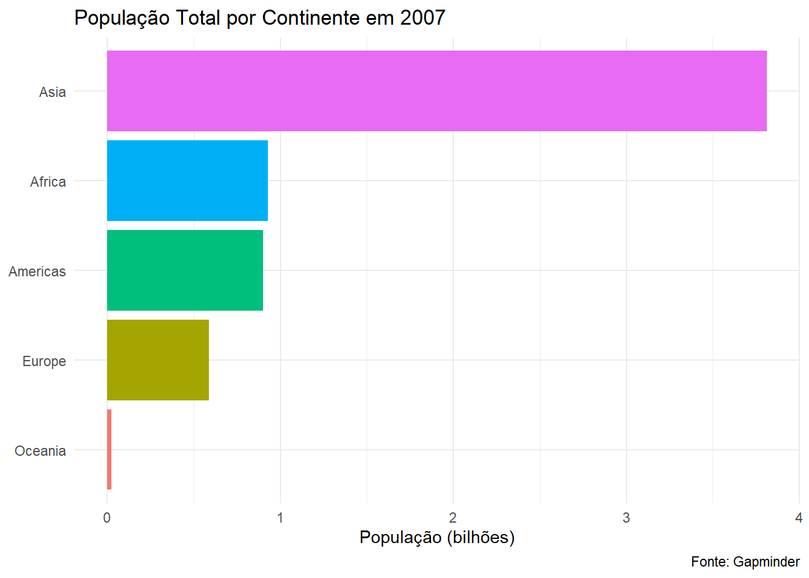
Bem, parece que o gráfico começou a tomar forma. Mas não conseguimos fazer uma distinção dos dois países (Brasil e Chile). Como fazer? Dentro do aes, vamos colocar o argumento col, que vem de colorir.
brasil_chile |>ggplot(aes(x = year, y = gdpPercap,col = country)) +geom_line()
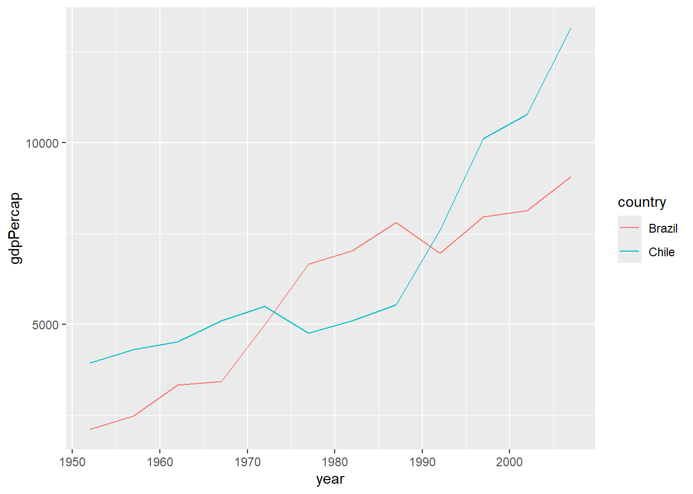
O gráfico começou a ficar interessante. Vamos adicionar uma nova camada para incluir informações tipo título, subtítulo. Para isso, incluimos a camada labs (labs vem de labels, que significa etiquetas em inglês). Vou adicionar uma camada chamada geom_point() para incluir pontos em cada ano. Veja como fica.
brasil_chile |>ggplot(aes(x = year, y = gdpPercap, color = country)) +geom_line() +geom_point() +labs(title ="Evolução do PIB per capita",subtitle ="Brasil e Chile | 1952–2007",x ="Ano",y ="PIB per capita (US$)",color ="País",caption ="Fonte: Gapminder" )
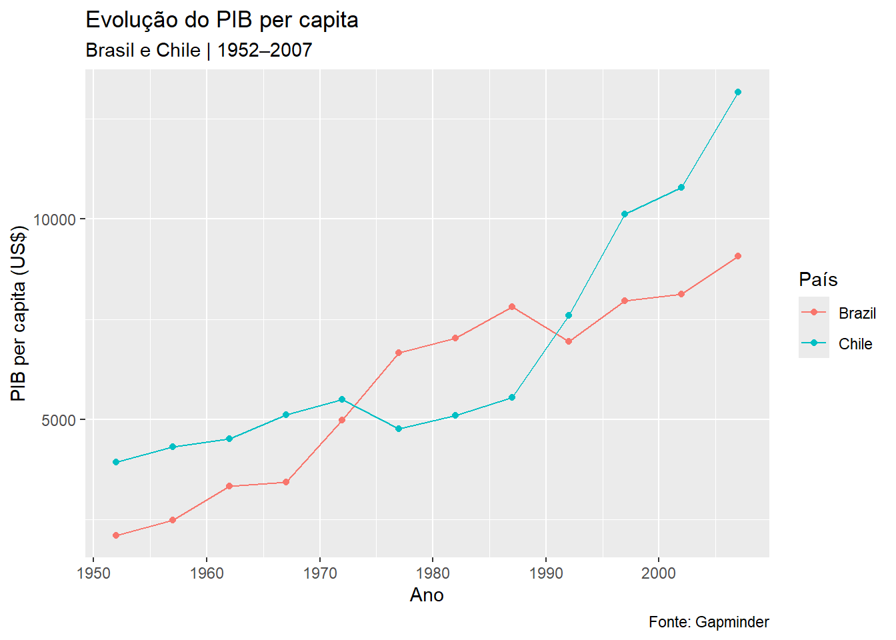
Para finalizar, vou fazer alguns ajustes finais: retirar esse fundo cinza, inserindo uma camada com um tema mais limpo (theme_minimal()). Também vou deixar a linha um pouco mais larga (linewidth, width é largura em inglês) e aumentar o tamanho dos pontos (size, size é tamanho em inglês).
brasil_chile |>ggplot(aes(x = year, y = gdpPercap, color = country)) +geom_line(linewidth =1.2) +geom_point(size =2.5) +labs(title ="Evolução do PIB per capita",subtitle ="Brasil e Chile | 1952–2007",x ="Ano",y ="PIB per capita (US$)",color ="País",caption ="Fonte: Gapminder" ) +theme_minimal()
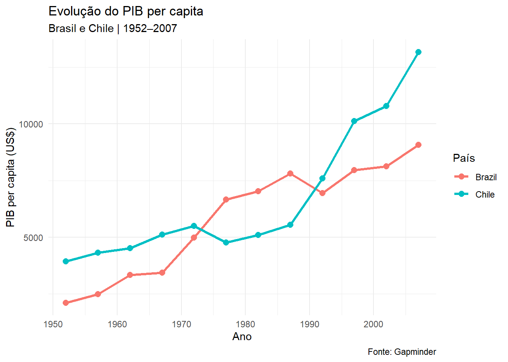
O que você observa neste gráfico? O Chile apresenta uma trajetória de crescimento mais acelerada do que o Brasil, especialmente a partir dos anos 1990?
Exercício 1: Faça o mesmo gráfico, mas desta vez inclua também a Argentina e a Colômbia. O que muda na interpretação?
2.2. Histograma — Distribuição do PIB per capita
Um histograma mostra como os dados estão distribuídos. Vamos ver a distribuição do PIB per capita dos países no ano de 2007.
dados_2007 = dados |>filter(year ==2007)dados_2007 |>ggplot(aes(x = gdpPercap)) +geom_histogram()
`stat_bin()` using `bins = 30`. Pick better value `binwidth`.
Vamos aplicar algumas melhorias que já vimos: incluir o theme_minimal(), incluir o labs.
dados_2007 |>ggplot(aes(x = gdpPercap)) +geom_histogram() +labs(title ="Distribuição do PIB per capita em 2007",x ="PIB per capita (dólares)",y ="Número de países",caption ="Fonte: Gapminder" ) +theme_minimal()
`stat_bin()` using `bins = 30`. Pick better value `binwidth`.
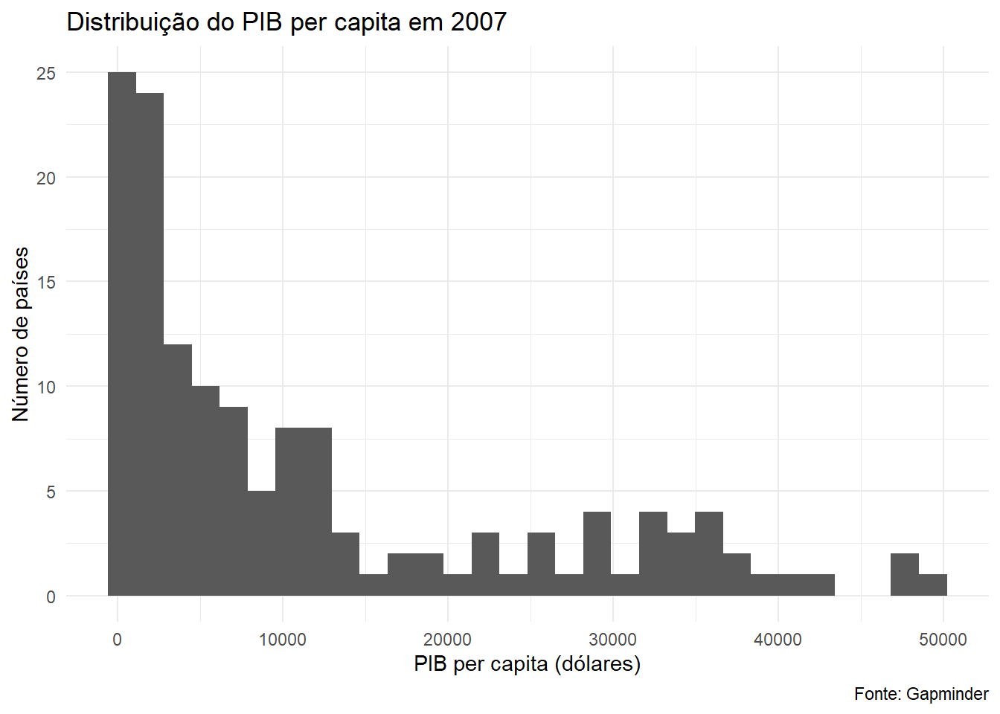
Vamos fazer um última customização: colorir o gráfico de azul (fill, fill é preencher em inglês) com bordas de branco (color, color é colorir em inglês). Vamos adicionar o parâmetro bins = 10. Mude o bins para 20 ou 30 e veja o que ocorre.
dados_2007 |>ggplot(aes(x = gdpPercap)) +geom_histogram(bins =10, fill ="steelblue", color ="white") +labs(title ="Distribuição do PIB per capita em 2007",x ="PIB per capita (dólares)",y ="Número de países",caption ="Fonte: Gapminder" ) +theme_minimal()
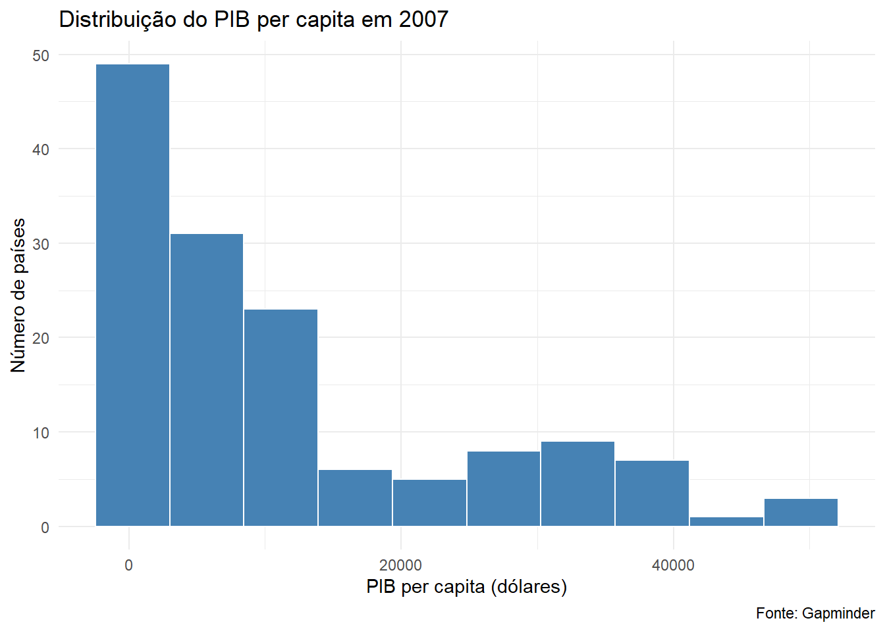
O que você observa neste gráfico? O que ele indica?
Exercício 2: Faça um histograma para o ano de 1952 e compare visualmente com o de 2007 que construímos agora. A distribuição ficou mais espalhada ou mais concentrada? O que isso indica?
2.3. Boxplot — Comparando a distribuição por continente
O boxplot é excelente para comparar a distribuição de uma variável entre grupos. Lembra que na aula anterior discutimos mediana, quartis e desvio-padrão? O boxplot mostra tudo isso visualmente! Vamos ver o que o código faz:
Acessa dados_2007;
Por meio da função ggplot, mapeia as variáveis nos eixos. No caso, no eixo x vai o continente (continent), no eixo y vai a expectativa de vida (lifeExp). Posso incluir o fill = continent para colorir os continentes de difentes cores. Teste com e sem este parâmetro para ver como fica;
Por meio do geom_boxplot() incluímos o visual que irá gerar os boxplots;
Por meio do parâmetro labs() nós incluímos informações nos eixos, título, legenda;
O theme_minimal() coloca um estilo mais limpo;
A camada ylim() é novidade. Ela permite você definir os limites do eixo. No nosso exemplo, conseguimos deixar os limites que vão de 0 a 100;
A última camada theme(legend.position = "none") exclui a legenda, visto que é uma informação redundante. Já temos essa informação no eixo x.
dados_2007 |>ggplot(aes(x = continent, y = lifeExp,fill = continent)) +geom_boxplot() +labs(title ="Expectativa de Vida por Continente em 2007",x ="Continente",y ="Expectativa de vida (anos)",fill ="Continente",caption ="Fonte: Gapminder" ) +theme_minimal() +ylim(0, 100) +theme(legend.position ="none") # tira a legenda (já está no eixo X)
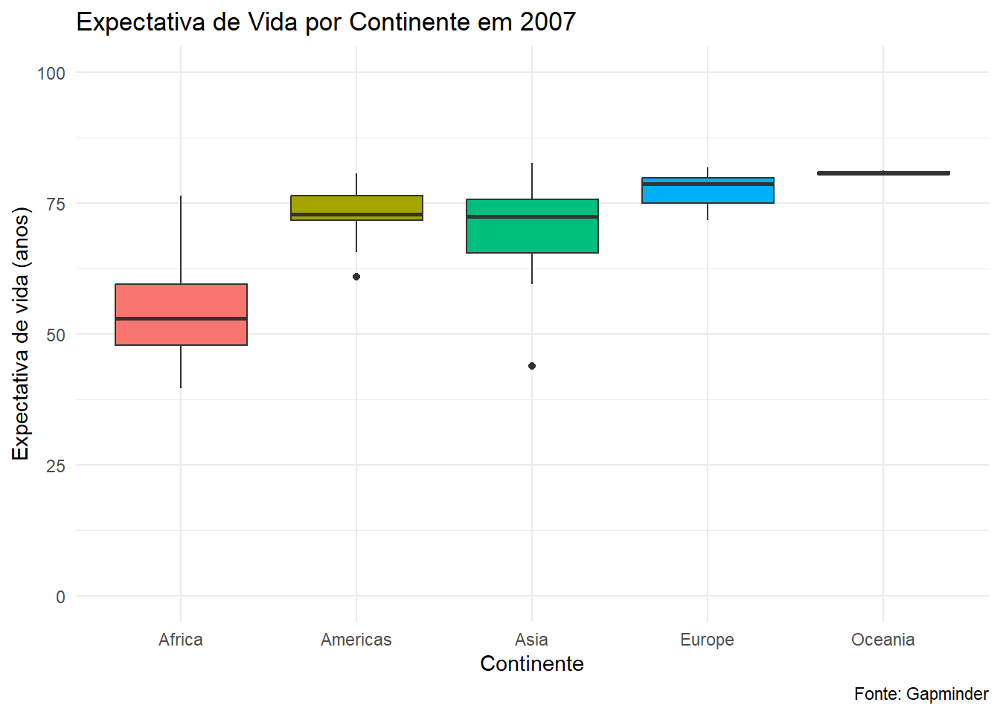
Lendo o boxplot:
A linha do meio da caixa é a mediana (2º quartil);
A parte inferior da caixa é o 1º quartil (25%);
A parte superior da caixa é o 3º quartil (75%);
Os pontos fora dos bigodes são outliers — países com valores atípicos.
Os parâmetros fill e color mapeiam variáveis a propriedades visuais. fill preenche o interior da forma. color define a borda. Quando colocados dentro do aes(), eles são associados a uma variável dos dados. Quando colocados fora (como fizemos no histograma), são cores fixas.
O que você observa neste gráfico? O que ele indica?
Exercício 3: Repita o boxplot, mas agora para o PIB per capita (gdpPercap). Qual continente apresenta maior variação interna?
2.4. Histograma com facet_wrap() — Um painel por continente
Às vezes queremos comparar a distribuição de uma variável entre vários grupos ao mesmo tempo. O facet_wrap() divide o gráfico em painéis, um para cada grupo. É uma funcionalidade muito poderosa!
Dê uma conferida no código abaixo. Veja que você conhece quase tudo que colocamos abaixo. A única novidade é esse argumento aqui: axis.text.x = element_text(angle = 45, hjust = 1). Ele ajusta o eixo x para ficar em 45º.
dados_2007 |>ggplot(aes(x = gdpPercap, fill = continent)) +geom_histogram(bins =12, color ="white") +labs(title ="Distribuição do PIB per capita por Continente em 2007",x ="PIB per capita (dólares)",y ="Número de países",fill ="Continente",caption ="Fonte: Gapminder" ) +theme_minimal() +theme(legend.position ="none",axis.text.x =element_text(angle =45, hjust =1) )
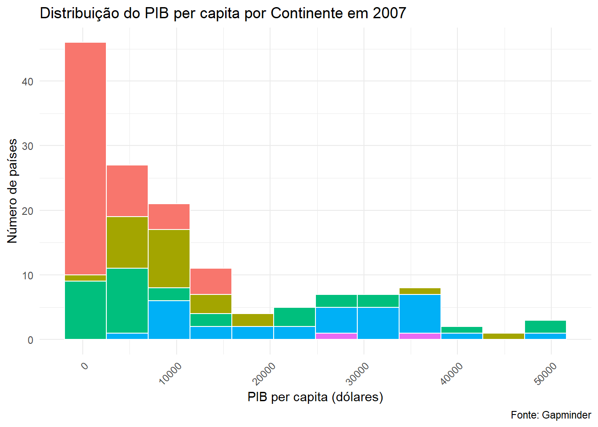
Note que o gráfico fica prejudicado pela sobreposição dos histogramas. Vamos resolver isso usando o facet_wrap().
dados_2007 |>ggplot(aes(x = gdpPercap, fill = continent)) +geom_histogram(bins =12, color ="white") +facet_wrap(~continent) +labs(title ="Distribuição do PIB per capita por Continente em 2007",x ="PIB per capita (dólares)",y ="Número de países",fill ="Continente",caption ="Fonte: Gapminder" ) +theme_minimal() +theme(legend.position ="none",axis.text.x =element_text(angle =45, hjust =1) )
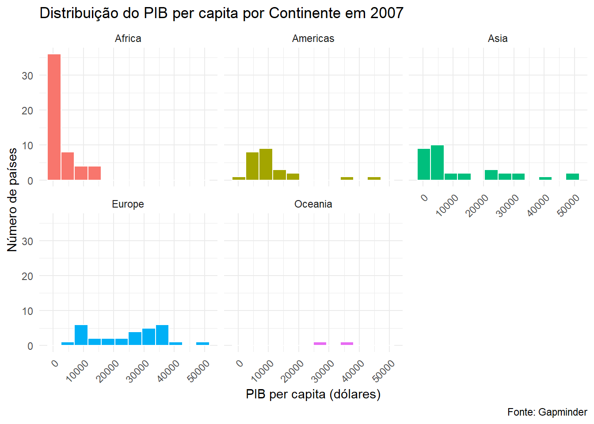
Tire um tempo para interpretar estes resultados. O que eles indicam?
Exercício 4: Use facet_grid(~continent) para fazer um gráfico de linha da evolução da expectativa de vida ao longo do tempo, com um painel por continente. Dica: use todos os dados (dados), não apenas dados_2007. Note qual a diferença do facet_wrap() que vimos anteriormente e o facet_grid().
2.5. Gráfico de Barras — PIB per capita médio por continente
Vamos combinar o dplyr com o ggplot2 para criar um gráfico de barras. Primeiro calculamos a média com summarise(), e depois plotamos. Note que até a 4ª linha fizemos um group_by com summarise() do pacote dplyr. As linhas seguintes partem para a construção de gráfico.
Dica para entender melhor: selecione só a primeiras quatro linhas e rode para ver o que sai.
dados |>filter(year ==2007) |>group_by(continent) |>summarise(media_pib =mean(gdpPercap)) |>ggplot(aes(x = continent, y = media_pib, fill = continent)) +geom_col() +labs(title ="PIB per capita médio por continente em 2007",x ="Continente",y ="PIB per capita médio (US$)",fill ="Continente",caption ="Fonte: Gapminder" ) +theme_minimal() +theme(legend.position ="none")
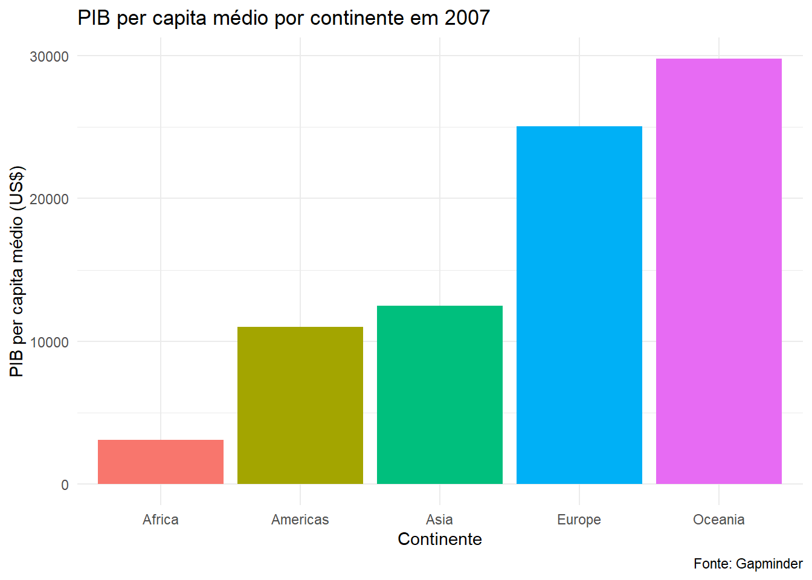
2.6. Gráfico de Barras Horizontal — População por continente
O gráfico abaixo também estamos combinando o dplyr e o ggplot2, né? Nas primeiras quatro linhas fazemos uma operação com o dplyr e depois seguimos o gráfico.
Às vezes os rótulos do eixo X ficam sobrepostos ou difíceis de ler. Veja abaixo.
dados |>filter(year ==2007) |>group_by(continent) |>summarise(pop_total =sum(pop)) |>ggplot(aes(x = continent, y = pop_total /1e9, fill = continent)) +geom_col() +theme_minimal() +labs(title ="População Total por Continente em 2007",x =NULL,y ="População (bilhões)",fill ="Continente",caption ="Fonte: Gapminder" ) +theme_minimal() +theme(legend.position ="none")
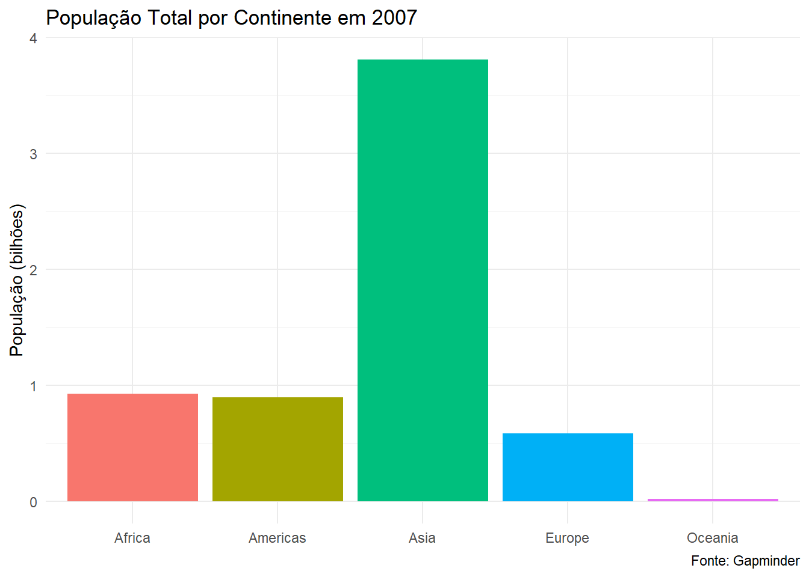
Uma boa solução é virar o gráfico usando coord_flip().
dados |>filter(year ==2007) |>group_by(continent) |>summarise(pop_total =sum(pop)) |>ggplot(aes(x = continent, y = pop_total /1e9, fill = continent)) +geom_col() +coord_flip() +labs(title ="População Total por Continente em 2007",x =NULL,y ="População (bilhões)",fill ="Continente",caption ="Fonte: Gapminder" ) +theme_minimal() +theme(legend.position ="none")
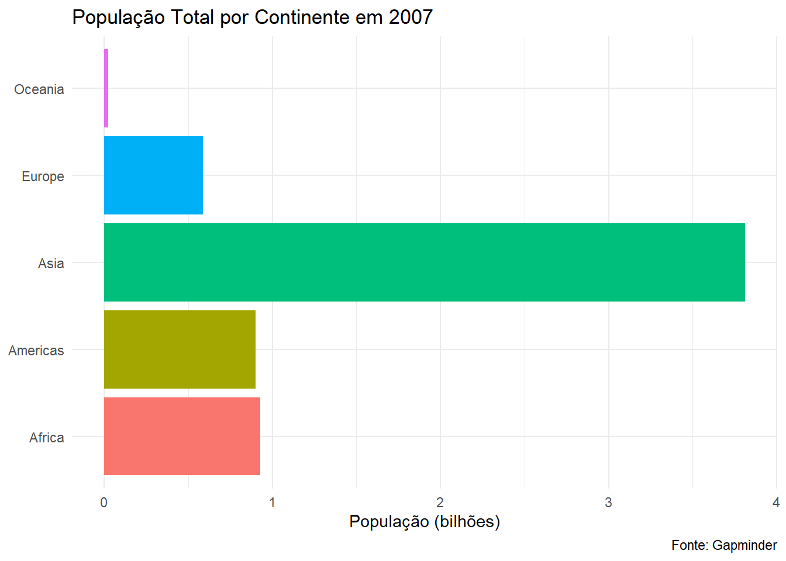
Vamos finalizar usando a função fct_reorder() do pacote forcats para ordenar o gráfico. Esta função serve para reordernar uma variável qualitativa de acordo com algum critério quantitativo. Veja que estamos ordenando a variável qualitativa continent com base na pop_total.
dados |>filter(year ==2007) |>group_by(continent) |>summarise(pop_total =sum(pop)) |>ggplot(aes(x =fct_reorder(continent, pop_total), y = pop_total /1e9, fill = continent)) +geom_col() +coord_flip() +labs(title ="População Total por Continente em 2007",x =NULL,y ="População (bilhões)",fill ="Continente",caption ="Fonte: Gapminder" ) +theme_minimal() +theme(legend.position ="none")
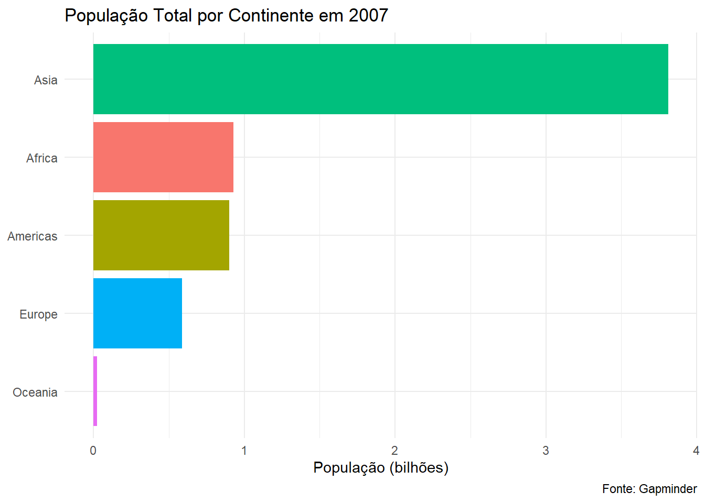
Tire um tempo para interpretar estes resultados. O que eles indicam?
2.6. Dispersão — Relação entre PIB per capita e Expectativa de vida
O gráfico de dispersão (scatter plot) é ideal para explorar a relação entre duas variáveis numéricas. Lembra que na aula anterior calculamos a correlação entre expectativa de vida e PIB per capita? Agora vamos visualizar!
Vamos começar por partes. Primeiro vamos apenas colocar as variáveis nos devidos eixos.
dados_2007 |>ggplot(aes(x = gdpPercap, y = lifeExp)) +geom_point()
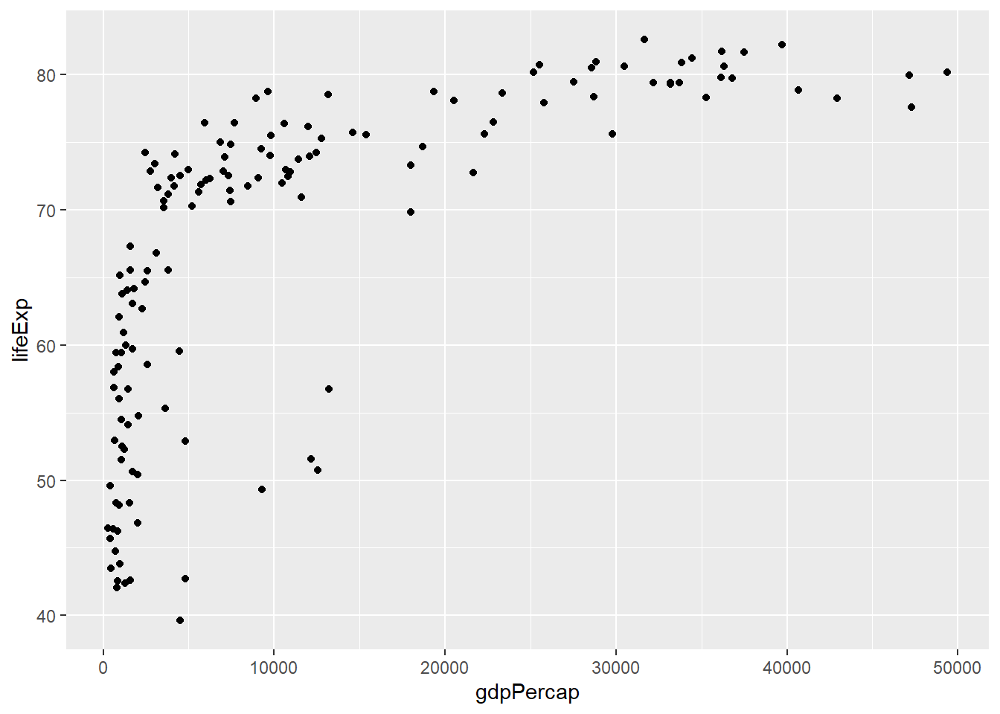
Vamos dar uma melhorada incluindo o continente no parâmetro color e a população no parâmetro size. Vamos adicionar o parâmetro alpha em geom_point(). Este parâmetro deixa o ponto mais transparente. Por fim, vamos adicionar a camada scale_x_log10() que basicamente converte o eixo x em uma escala logarítimica de base 10.
Não vou entrar em detalhes sobre esta conversão. A única coisa que precisa saber é que é uma conversão comum entre economistas quando temos números muito grandes.
Vamos fazer uns ajustes finais apenas para melhorar a visualização.
dados_2007 |>ggplot(aes(x = gdpPercap, y = lifeExp,color = continent, size = pop)) +geom_point(alpha =0.7) +scale_x_log10() +labs(title ="PIB per capita vs. Expectativa de Vida em 2007",x ="PIB per capita (escala log, US$)",y ="Expectativa de vida (anos)",color ="Continente",size ="População",caption ="Fonte: Gapminder" ) +theme_minimal()
Tire um tempo para interpretar estes resultados. O que eles indicam?
Exercício 5: Repita o gráfico de dispersão para o ano de 1952. A relação entre PIB e expectativa de vida parece mais ou menos forte do que em 2007?
Podemos adicionar uma linha de tendência ao gráfico de dispersão com geom_smooth(). Ela ajuda a identificar visualmente a direção da relação entre as variáveis.
dados_2007 |>ggplot(aes(x = gdpPercap, y = lifeExp)) +geom_point(aes(color = continent, size = pop), alpha =0.7) +geom_smooth(method ="lm", se =TRUE, color ="black", linewidth =0.8) +scale_x_log10() +labs(title ="PIB per capita vs. Expectativa de Vida em 2007",subtitle ="Com linha de tendência (regressão linear)",x ="PIB per capita (escala log, US$)",y ="Expectativa de vida (anos)",color ="Continente",size ="População",caption ="Fonte: Gapminder" ) +theme_minimal()
`geom_smooth()` using formula = 'y ~ x'
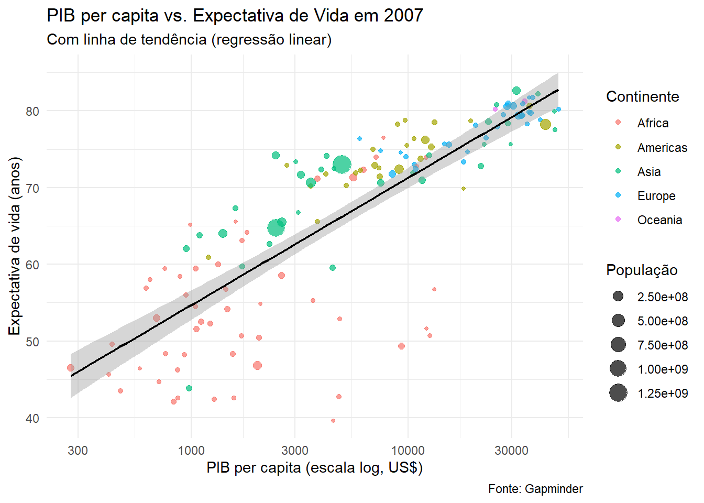
method = "lm" significa linear model, ou seja, uma reta de regressão. O argumento se = TRUE mostra a faixa de incerteza ao redor da linha. Você pode usar method = "loess" para uma curva mais flexível que se adapta aos dados.
3. Lista final
Use o dataset nascimentos_tratado que preparamos lá no comecinho do material para resolver os exercícios a seguir.
a) Filtre os dados para filtrar anos após 2010 e Luziâna e faça um gráfico de linhas para ver a evolução do número de nascimentos.
b) Filtre os dados de 2010, Luziânia e Valparaíso e faça um gráfico de linhas ver a evolução nos municípios. Dica: use o parâmetro col.
c) Filtre o ano de 2022 e crie um gráfico de colunas horizontais para ver qual o ranking de municípios por número de nascimentos.
e) Filtre o ano de 2022 e crie um boxplot do número de nascimentos dos municípios.
Agora vamos usar a base gapminder
f) Crie um gráfico de linha mostrando a evolução da população total por continente ao longo do tempo. Dica: use group_by(continent, year) e summarise(pop_total = sum(pop)) antes de plotar.
g) Faça um boxplot comparando a distribuição do PIB per capita entre os continentes em 1952 e em 2007. Use facet_wrap(~year) para colocar os dois anos lado a lado.
h) Escolha três países de continentes diferentes e faça um gráfico de linha comparando a evolução da expectativa de vida deles ao longo do tempo. Adicione geom_point() e personalize as cores com scale_color_manual().